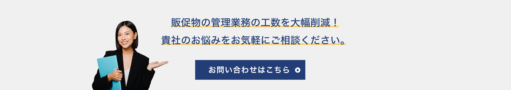

むこうぞの だいち
Daichi Mukozono
大学2年次にHTMLやCSSを独学し、地元の少年サッカーチームの
ホームページや架空のラーメン屋「下降気流」のサイトを制作。
その後、デザインに興味を持ち、UIデザイナーとして８ヶ月間の
長期インターンシップに参加。
そこで得たものを生かして更なるステップアップを目指します！
ホームページ
兵庫ダイハツ販売株式会社／販売サイト
担当：CTA作成(sp)
目的：CVポイントの配置
理由：閲覧数の多いキャンペーンページにCTAエリアを配置する事によりCV増加に繋げるため。
感想：カラーのトーンを揃えた。また、これがボタンであることを読み手に認識してもらうため、三角マークを加えた。
兵庫ダイハツ販売株式会社／販売サイト
担当：バナー作成(sp)
目的：トップページから在庫車セールページへの誘導強化
理由：在庫車ページを見ているユーザーはCVR4.78%、見ていないユーザーは1.03%となっており、経由させるとCVR向上が見込めるため。
感想：白い文字がはっきり見えるように、背景の黒フィルターを調整した。
株式会社日本自然発酵／日本自然発酵 [おいしいWeb]
担当：バナー作成(sp)
目的：会員数を増やすため、新規登録のコンテンツエリア作成
理由：新規で流入するユーザーのCVRが高いから、新規ユーザーを会員登録させることによりCVR上昇に繋げるため。
感想：どのような情報なのかより読み手に伝わるよう、文字だけでなく写真も加えた。
株式会社イントゥ／美sella
担当：バナー作成(sp)
目的：会員数の増加
理由：CVするユーザーは会員が多い。一方で新規で流入するユーザーも96%とかなり多いので、新規ユーザーをまず会員登録させることで、後半のCV率上昇に繋げるため。
感想：文字がはっきりと見えるように、背景を調整した。また、ボタンの視認性を上げるため大きめに作成した。
キンコーズ・ジャパン株式会社/キンコーズ公式サイト
担当：CTA作成
目的：問い合わせ画面への遷移増加
理由：問い合わせ画面への動線が少ないため。
感想：男性よりも女性の写真のほうが視線に止まりやすい傾向があることを意識し、写真を加えた。

株式会社Asobica/COORUM
担当：ヘッダーのリデザイン
目的：他ページへの回遊性向上
理由：headerのCTAの利用者が一番多く、他ページへの流入も一定数あることから、デザインを変更することによって、それぞれを増加させるため。
感想：読み手に伝わりやすいよう、ヘッダーにアイコンを設置した。
エックスサーバー株式会社/エックスサーバー
担当：固定ヘッダーのリデザイン
目的：流入が多いページへの導線強化のためのCTAを含むヘッダー改善
理由：CV前に料金、特長、機能ページへ遷移することが多い。その導線をさらに強化するためにジャンルからの選択ではなく、流入が多いページをFVで遷移できるようにするため。
感想：サイトのカラーに合わせてヘッダーの文字の色を調整。また、読み手に伝わりやすいようアイコンを設置した。
株式会社Asobica/COORUM
担当：導入事例コンテンツ作成
目的：導入事例へのUX向上
理由：導入事例を経由してCVするユーザーが多いから、導入事例で一番見られているページを常時表示させ、CVを増加させるため。
感想：見やすくするなるよう、枠と写真の間にある余白を意識した。
株式会社ウィルPMインターナショナル/WILL PM
担当：コンテンツリデザイン
目的：サービスコンテンツのデザインの改善
理由：サービスの説明がない状態で個別詳細への遷移では、魅力が伝わりづらいため。
感想：サイトの雰囲気を崩さないようフォントや写真、配色に注意した。
ロングウッドスポーツ株式会社/インドアテニススクール
担当：固定ヘッダーデザイン(sp)
目的：導線強化
理由：体験イベント＆入会特典、体験レッスン、入会案内からのCVが多いため。ページ内の下部にいても固定ヘッダーから遷移できるようになり、さらなるCV増加に繋げるため。
感想：読み手に伝わりやすいよう、ヘッダーメニューにアイコンを設置した。
オリジナルバナー一覧